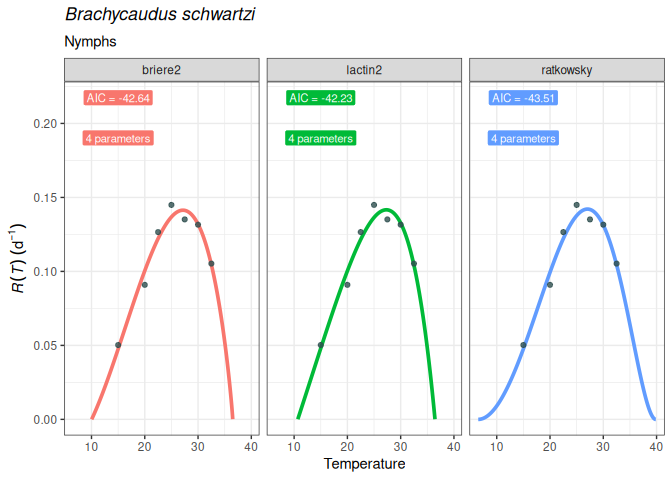
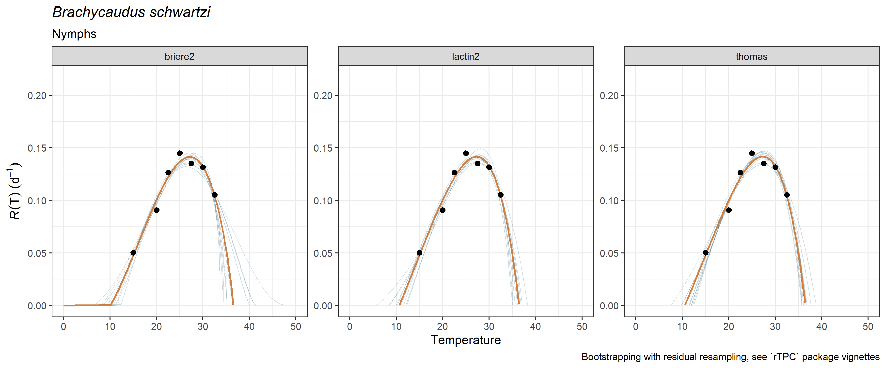
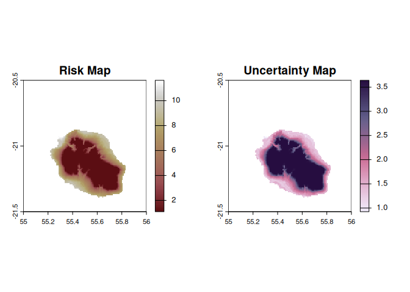

Aims of the package
The goal of mappestRisk package is to facilitate the transition from development data of arthropod crop-pests’ thermal biology obtained in lab-controlled conditions to understandable forecasts assessing risk of pest occurrence in a given region. Closing this gap usually involves two key steps: (1) fitting and selecting nonlinear regression models and derived thermal traits under ecological criteria, and (2) projecting these traits onto interest regions for pest risk assessment by extracting climate data. However, most data producers from physiology labs have limited opportunities and time to develop their R programming skills, so addressing these two steps may not be straightforward.
For this purpose, mappestRisk intends to facilitate this workflow for any researcher with minimal, basic R programming skills. This package has been built upon previous efforts such as devRate (François Rebaudo, Struelens, and Dangles 2018), rTPC and nls.multstart packages (Padfield, O’Sullivan, and Pawar 2021) and a methodology for predicting climatic suitability based on fundamental thermal niche as estimated by thermal performance curves, as suggested in Taylor et al. (2019) . Up to date, mappestRisk is built for modelling developmental thermal performance curves, since this is the most commonly measured life-history trait in experimental approaches and it has major contributions to fitness dependence on temperature (Pawar et al. 2024) and it also allows to predict phenologies (Schmalensee et al. 2021).
Therefore, mappestRisk has three different modules: (1) model fitting & selection using a set of the most commonly used equations describing developmental responses to temperature under the nls.multstart framework (Padfield and Matheson 2020) using equation helpers from rTPC(Padfield and O’Sullivan 2023) and devRate (Francois Rebaudo and Regnier 2024), with visualization of model fitting to help model selection by the user; (2) calculation of suitability thermal limits, which consist on a temperature interval delimiting the optimal performance zone or suitability; and (3) climatic data extraction & visualization with either exportable rasters or static or interactive map figures.
Installation
mappestRisk package’s latest version can be installed from the r-universe:
install.packages('mappestRisk', repos = c('https://ecologyr.r-universe.dev', 'https://cloud.r-project.org')) You can also install its latest version from the GitHub repository after installing either remotes or devtools R packages.
remotes::install_github("EcologyR/mappestRisk")
#alternatively -> devtools::install_github("EcologyR/mappestRisk")Example: mappestRisk workflow
1. Fit thermal performance curves (TPC) to your data and plot results and parameter uncertainty:
In this example, we’ll show how to fit one to several thermal performance curves to a data set of development rate variation across temperatures1. The following code provides an example as given in fit_devmodels() function documentation, with a data table showing the output of fitted models, and how to visualize them for selecting curves using plot_devmodels().
library("mappestRisk")
data("aphid")
fitted_tpcs <- fit_devmodels(temp = aphid$temperature,
dev_rate = aphid$rate_value,
model_name = c("briere2", "lactin2", "ratkowsky"))
plot_devmodels(temp = aphid$temperature,
dev_rate = aphid$rate_value,
fitted_parameters = fitted_tpcs,
species = "Brachycaudus schwartzi",
life_stage = "Nymphs")
For a more complete explanation and example of model fitting and visualization, see TPCs model fitting article.
Additionally, we recommend here to propagate uncertainty in parameter estimation of the fitted and selected TPC models using bootstrap procedures with residual resampling, following vignettes of rTPC package (Padfield, O’Sullivan, and Pawar 2021). This can be done with the function predict_curves() by setting the argument propagate_uncertainty to be TRUE. Resulting predictions can be plotted using plot_uncertainties(). A detailed explanation is given in the TPCs model fitting article.
preds_boots <- predict_curves(temp = aphid$temperature,
dev_rate = aphid$rate_value,
fitted_parameters = fitted_tpcs,
model_name_2boot = c("briere2", "lactin2"),
propagate_uncertainty = TRUE,
n_boots_samples = 10)
#>
#> Note: the simulation of new bootstrapped curves takes some time. Await patiently or reduce your `n_boots_samples`
#>
#> Bootstrapping simulations completed for briere2
#>
#> Bootstrapping simulations completed for lactin2
plot_uncertainties(bootstrap_tpcs = preds_boots,
temp = aphid$temperature,
dev_rate = aphid$rate_value,
species = "Brachycaudus schwartzi",
life_stage = "Nymphs")
2. Calculate thermal suitability bounds:
After the previous steps, the user can calculate the thermal boundaries of the optimal zone of the TPC –i.e., those temperature values yielding the Y-th quantile of the development rate (default to ) at both sides of the curve peak or . Once a model has been selected under both ecological and statistical criteria, the thermal_suitability_bounds() function calculates these values:
boundaries <- therm_suit_bounds(preds_tbl = preds_boots,
model_name = "briere2",
suitability_threshold = 80) 3. Climatic data extraction and projection
These optimal thermal boundaries are used for spatial projection of pest risk. The map_risk() function automatically downloads temperature data into a SpatRaster format from WorldClim masked into an user-defined region or area, and then calculates the number of months per year with highly suitable temperatures for pest development.
risk_rast <- map_risk(t_vals = boundaries,
region = "Réunion",
path = tempdir() # directory to download climate data
)
Citation
If using this package, please cite it:
citation("mappestRisk")
To cite package 'mappestRisk' in publications use:
San-Segundo Molina D, Barbosa A, Pérez-Luque A, Rodríguez-Sánchez F
(2025). _mappestRisk: An R package for modelling and mapping risk of
pest development based on known thermal limits_.
<https://ecologyr.github.io/mappestRisk>.
A BibTeX entry for LaTeX users is
@Manual{,
title = {mappestRisk: An R package for modelling and mapping risk of pest development based on
known thermal limits},
author = {Darío {San-Segundo Molina} and A. Márcia Barbosa and Antonio Jesús Pérez-Luque and Francisco Rodríguez-Sánchez},
year = {2025},
url = {https://ecologyr.github.io/mappestRisk},
}Funding
The development of this software has been funded by Fondo Europeo de Desarrollo Regional (FEDER) and Consejería de Transformación Económica, Industria, Conocimiento y Universidades of Junta de Andalucía (proyecto US-1381388, Universidad de Sevilla).

Code of Conduct
Please note that the mappestRisk project is released with a Contributor Code of Conduct. By contributing to this project, you agree to abide by its terms.